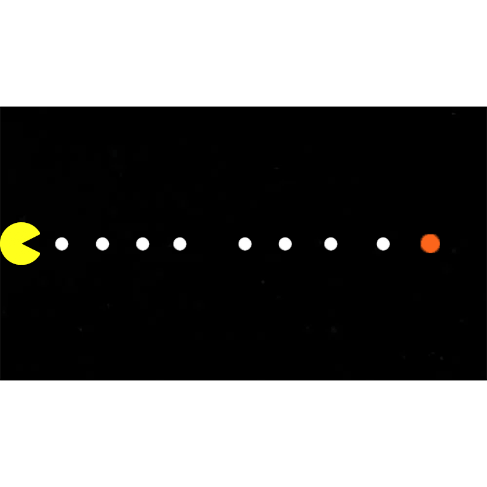

Pac-Man GIF
In Pac-Man GIF: Chasing Ghosts (2023), I reimagined the classic arcade game through animation to explore rhythm, repetition, and movement. Using Photoshop, the GIF loops the familiar chase between Pac-Man and the ghosts, drawing attention to the contrast between stillness and motion. By merging digital nostalgia with modern animation, the work reflects the exhibition's theme of Creative Juxtapositions, as it transforms a simple, static game into a dynamic, living visual. The repetition of the cycle invites viewers to consider how contrasting elements—familiar and unfamiliar, past and present—can coexist to create a renewed sense of play and rhythm.

Pac-Man GIF